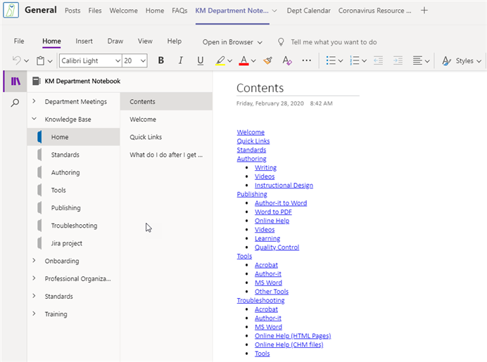

OneNote is deployed in each of the channels in the department Teams site. Depending on the channel, the notebooks include meeting notes, knowledge bases, training, and general knowledge sharing. The primary notebooks include the following:
Main department notebook
Product team notebooks
While you can work with the notebooks in the Teams application, you can also open the notebook in the local OneNote application installed on your computer. This can be a better experience and makes it easier to work with the notebook. For more information on opening the notebook locally, refer to these resources:
Opening a notebook in the local application (KM Video)
Knowledge Management department notebook
The a main department OneNote is accessible from the General channel.

The notebook includes the following sections:
|
Section |
Description |
|---|---|
|
Department meetings |
A place to record the agenda and notes for our monthly meetings. |
|
Knowledge Base |
We moved the wiki-based knowledge base from the current portal to OneNote. It's easier to maintain and organize in OneNote and it is still searchable |
|
Onboarding |
This section is "in progress" but is intended to help with the onboarding process for future team members. |
|
Professional Organizations and Conferences |
There are sections (more can be added) for the various organizations. If you want to share information, notes from conferences or webinars, etc, this is a central place to share the information. |
|
Standards |
Currently, this section includes some quick links to the various standards documents and resources. |
|
Training |
This section includes training courses for topics like Author-it, Office Groups, and Video creation. |
Knowledge Management product team notebooks
There is a OneNote for each product team. By default, these notebooks include sections for team meetings and any processes that are specific to the team. Additional sections can be added as required.
Opening a notebook in the OneNote application
While you can open and work with OneNote in the Teams interface, it is a MUCH better experience if you work with it using the OneNote app installed on your laptop.
Watch a video on opening OneNote in the local application:
Opening OneNote in the Local Application (KM Video)
Complete the following to open a notebook in the local OneNote application:
In the channel containing the notebook, select the notebook tab at the top of the page.
Select File > Info > Edit in OneNote app. The notebook opens in the local OneNote application.
Searching for information in OneNote
Complete the following to search for information:
Open the OneNote in your local OneNote application.
Enter the search text into the search field at the top right of the OneNote window.
Select the note from the results list.
(Optional) In the search results, click Finished: All Notebooks and use the filters to narrow the results.